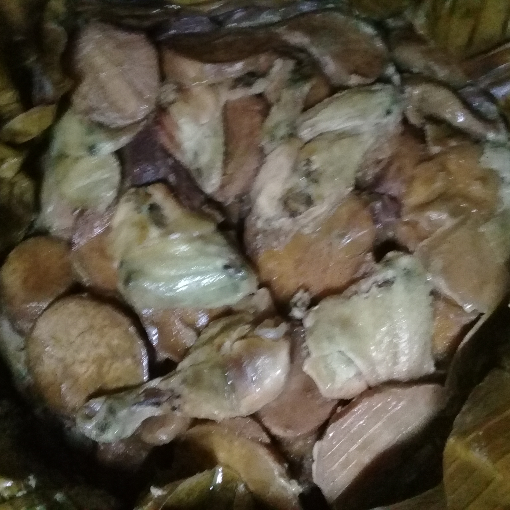

The Tolai mumu
The Tolai mumu, is a specially made dish to be eaten at any time you wish, below outline its preparation and cooking steps.

INGREDIENTS
- Peeled Energy Foods
-
A bundle peeled taros
-
A bundle peeled bananas
-
15 to 20 sweet potatos peeled
-
15 peeled ripe java bananas (optional)
200gram grated coconut
Seasonings
900gram chicken pieces
STEPS
-
Prepare Energy foods peeled earlier on
-
Prepare cut banana leafs in pot shaped manner
-
Placed peeled energies, with chicken pieces neatly inside the banana leafs
- milk with grated coconut and seasoned thoroughly
- parcel and gently placed the uncooked food parcel in an earth oven
- Covered completely with hot stones for 4-6 hours approximately